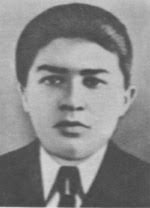

Анищенко Сергей Петрович
Стрелок 16-го стрелкового полка 102-й стрелковой дивизии 48-й армии 1-го Белорусского фронта, красноармеец...
Григорий Семёнович Ковалёв
Григорий Ковалёв родился 25 апреля (по новому стилю — 8 мая) 1902 года в деревне Большая Крушиновка (ныне — Рогачёвский район Гомельской области Белоруссии). В 1924—1928 годах проходил службу в Рабоче-крестьянской Красной Армии...